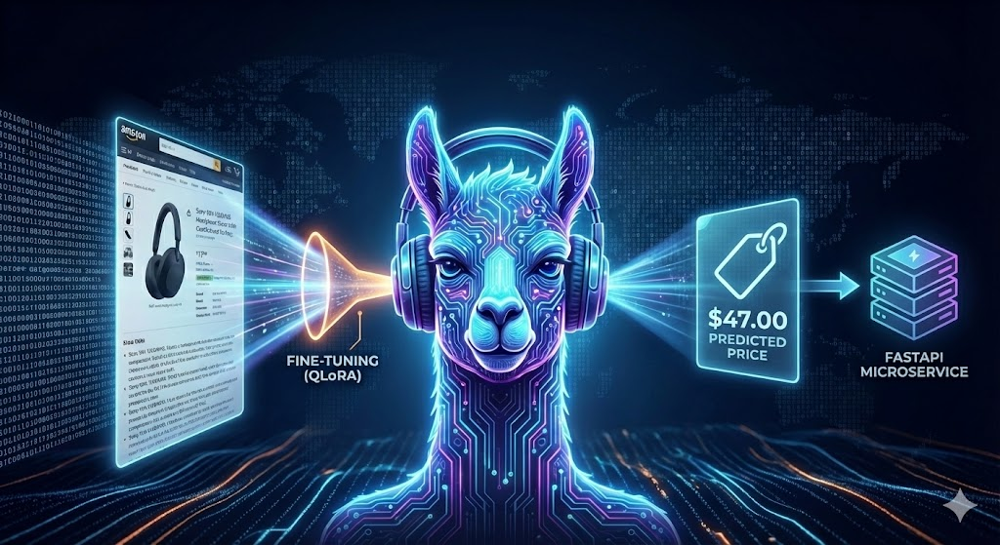
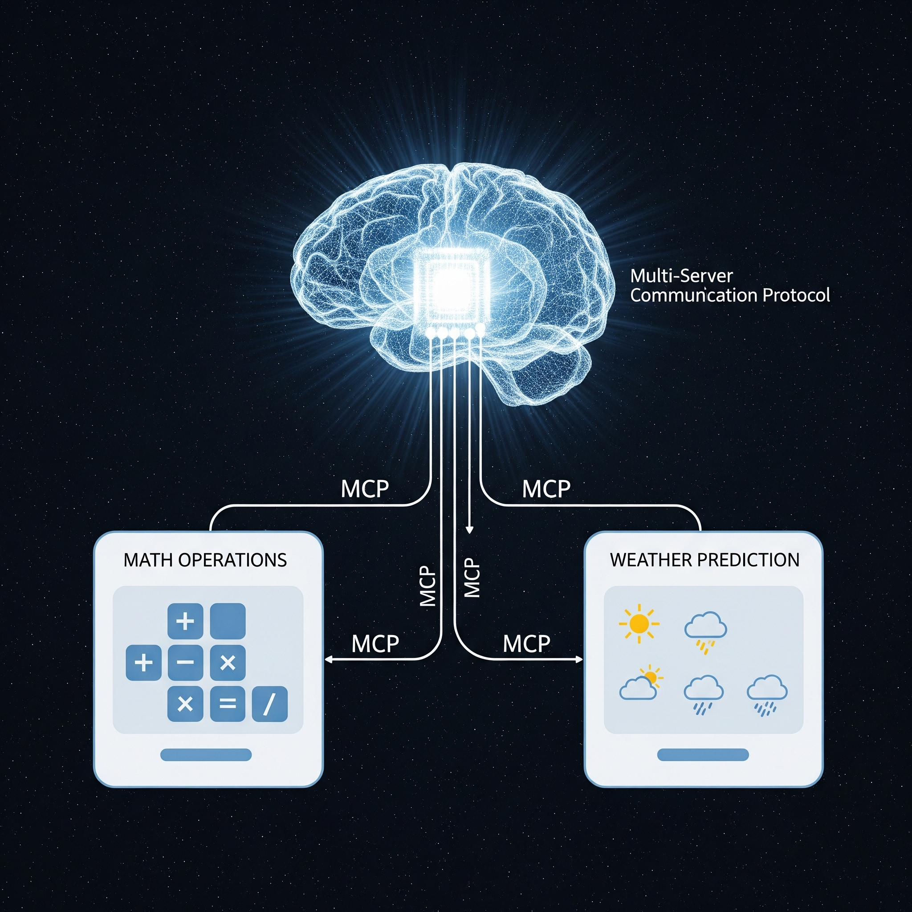
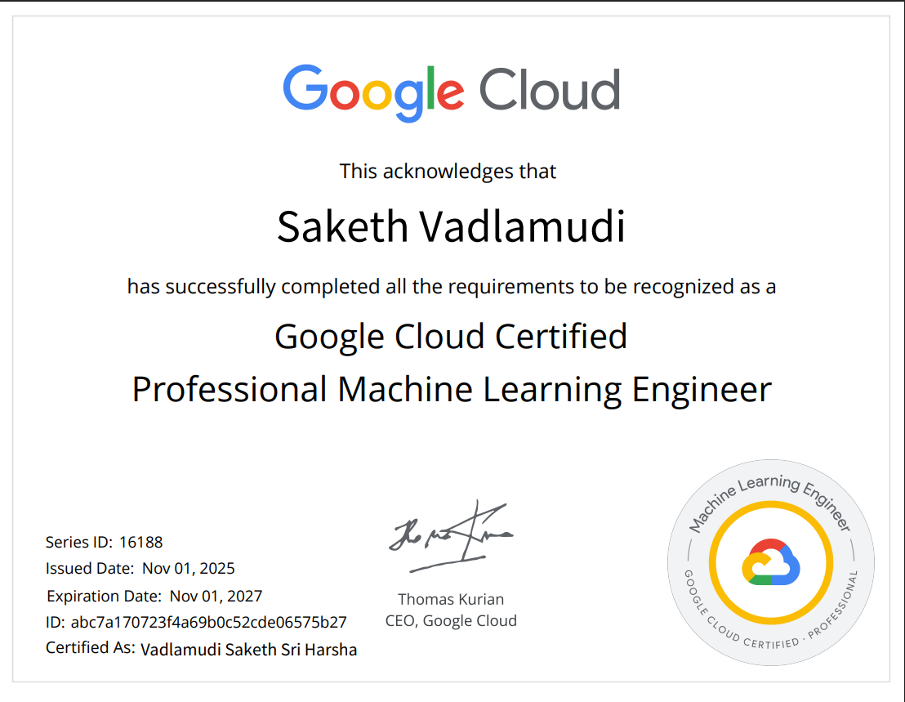
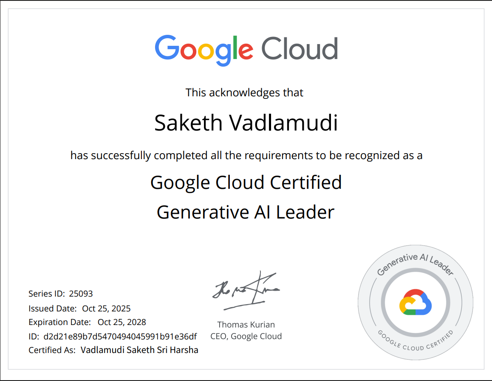
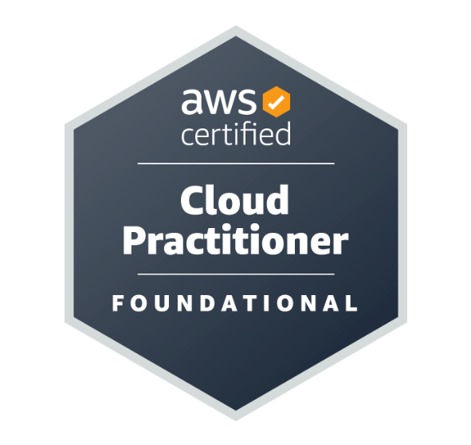

Enterprise AI
Agentic workflows, RAG, NLP, evaluation, prompt design, and Codex Skills.
GenAILangGraphRAG
Enterprise AI · Data Platforms · Oracle
AI/ML engineer designing secure GenAI workflows, Oracle data automation, and full-stack decision platforms—from early architecture to stakeholder-ready prototypes.
AI Applications Engineer
About
I’m a Senior Data Scientist and AI Applications Engineer at Oracle, focused on turning ambiguous business problems into dependable AI and data products. My experience spans enterprise NL-to-SQL, multi-agent reporting systems, applied machine learning, and automation across Oracle, Tiger Analytics, and ValueLabs.
I work across the stack—reasoning about architecture, building Python services and AI workflows, shaping usable interfaces, and translating technical output into decisions leaders can act on.
Expertise
From guarded data access to stakeholder-facing applications, I combine AI engineering with dependable software delivery.
Agentic workflows, RAG, NLP, evaluation, prompt design, and Codex Skills.
Secure NL-to-SQL, Fusion migration readiness, data quality, and SQL remediation.
Python APIs, web applications, workflow automation, and decision-support interfaces.
Cloud-native deployment, containers, engineering automation, and delivery visibility.
Experience
Senior Data Scientist — AI Applications Engineer
AIML Senior Associate
Senior Software Engineer — Data Scientist
Selected work
Selected outcomes from enterprise AI, applied machine learning, data platforms, and engineering automation.
Converted natural-language business questions into governed, read-only Oracle SQL and concise insights through a reusable Codex Skills architecture.
Orchestrated dependency-aware agents that transformed a single request into insights, structured data, and interactive charts at production scale.
Built sentiment and recommendation systems whose outputs were adopted by product stakeholders to improve customer messaging and ad relevance.
Unified data-center capacity and infrastructure signals while automating Oracle Fusion readiness, remediation, and exception-escalation workflows.
Improved core Python processing, automated repetitive operations, and delivered secure Django applications for internal and client-facing workflows.
Open-source builds
 View code
View code
Hybrid retrieval across 10K+ document chunks with more than 90% recall@10 and an 8× repeated-query speedup through Redis caching.

View codeQLoRA and Unsloth fine-tuning cut memory use by 60%, doubled training speed, and achieved $47 MAE versus GPT-4o’s $76 zero-shot baseline.

View codeAn agent system that integrates multiple tool servers and transport patterns through the Model Context Protocol.
A retrieval-based application for asking natural-language questions across document collections using embeddings and language models.
Credentials



Promoted within seven months for project delivery, technical leadership, and performance.
View on LinkedInFirst-prize recognition for consistent client delivery and execution under tight timelines.
View on LinkedIn